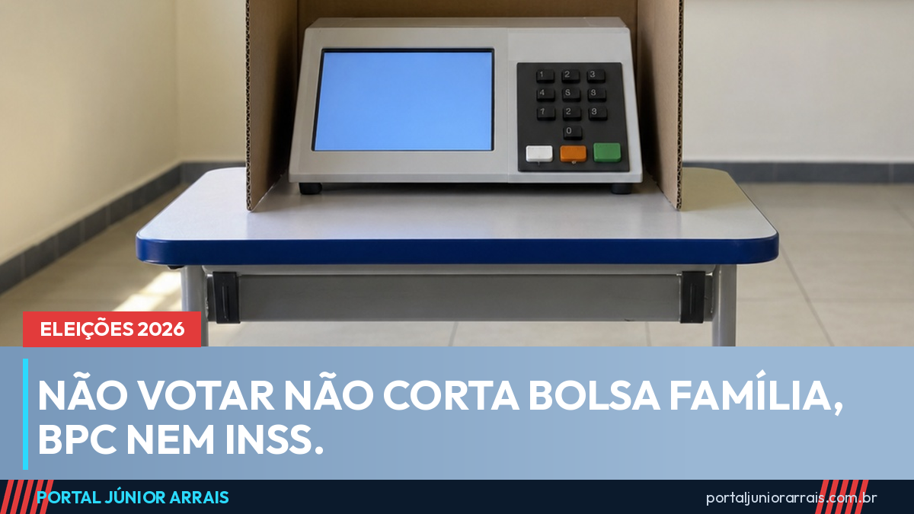

Não votar não corta Bolsa Família, BPC nem INSS: veja o que realmente acontece

A cada eleição a mesma mensagem volta a circular nos grupos de família: quem não votar perde o Bolsa Família, o BPC ou a aposentadoria. Com o primeiro turno marcado para 4 de outubro, ela já está rodando de novo. É falso. Nenhuma dessas hipóteses está na lei, e o Ministério do Desenvolvimento Social voltou a desmentir a história no início de setembro.
Vale separar as duas coisas, porque elas não se encostam. A obrigação de votar vem da legislação eleitoral. O direito ao benefício vem das regras de cada programa — renda familiar, cadastro em dia, avaliação médica, tempo de contribuição. Falta eleitoral não entra em nenhuma dessas contas.
O que acontece de verdade com quem não vota
Quem deixa de votar tem até 60 dias depois de cada turno para justificar a ausência nos canais da Justiça Eleitoral. Para o primeiro turno de 2026, o prazo vai até 3 de dezembro. Passado o prazo sem justificativa, é cobrada uma multa de R$ 3,51 por turno perdido.
O título só é cancelado depois de três turnos seguidos sem votar, sem justificar e sem pagar a multa. E cada turno conta separadamente, o que significa que uma eleição com dois turnos já consome duas dessas três faltas.
O que o título cancelado realmente impede
As restrições existem, mas são outras. Com o título cancelado, a pessoa fica impedida de:
- tirar passaporte ou carteira de identidade;
- tomar posse em cargo público aprovado em concurso;
- participar de licitação com órgão público;
- matricular-se em escola oficial;
- obter certidão de quitação eleitoral.
Repare no que não está nessa lista: Bolsa Família, BPC, aposentadoria, pensão, auxílio-doença, Pé-de-Meia, Gás do Povo, Tarifa Social. Nada disso depende de certidão eleitoral. Quem quiser conferir as regras de cada programa pode ler o guia do Bolsa Família e o guia do BPC/LOAS, onde estão os critérios que valem de fato.
Por que o boato pega
Ele mistura duas verdades para chegar a uma mentira. É verdade que a falta gera multa. É verdade que o CadÚnico precisa estar atualizado para o benefício continuar. Juntando as duas frases fora de contexto, nasce a ideia de que a urna corta o pagamento. O portal já explicou o que pode e o que não pode no dia da votação, e a lógica é a mesma: o que muda benefício é a regra do programa, não o comparecimento.
Cuidado com golpe
Em ano eleitoral aparece um tipo específico de golpista: o que manda mensagem dizendo que o seu benefício "está em risco por pendência eleitoral" e oferece regularizar o título mediante pagamento de uma taxa por Pix. A Justiça Eleitoral não cobra taxa por mensagem nem pede dados bancários, e a multa eleitoral é paga por guia própria, de valor baixo.
Se chegou mensagem assim, não clique em link e não pague nada. Se você tem dúvida real sobre a situação do seu benefício, procure um profissional de sua confiança para olhar o seu caso com calma.
Conteúdo informativo — não substitui orientação individualizada sobre o seu caso.
Júnior Arrais · Editor do Portal Júnior Arrais
Comunicador de Ubá (MG). Escreve todos os dias sobre benefícios sociais, INSS, trabalho e economia do dia a dia, a partir do Diário Oficial, de portarias e de fontes oficiais, em linguagem simples. Conheça a linha editorial e a política de correções do portal.